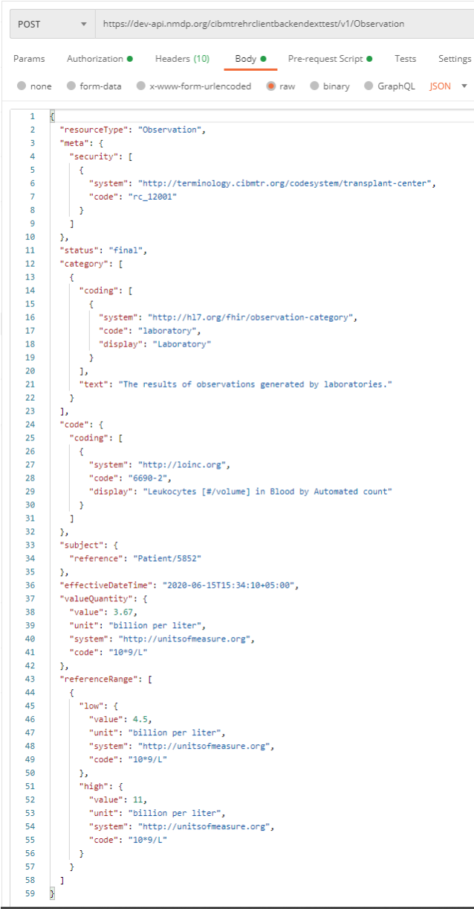

CIBMTR Reporting Implementation Guide
0.1.6 - Trial Use 1
CIBMTR Reporting Implementation Guide
0.1.6 - Trial Use 1
This page is part of the CIBMTR Reporting Implementation Guide (v0.1.6: Release Draft) based on FHIR R4. This is the current published version. For a full list of available versions, see the Directory of published versions 
CIBMTR collects clinical research data related to stem-cell transplants including patient characteristics, disease parameters, procedures, treatments, and longitudinal outcomes. Typically, this data is collected using an online form called FormsNet and populated by a data manager associated with a transplant center or hospital. CIBMTR is committed to minimizing the data collection effort for transplant centers and data managers and is actively working to collect data electronically from transplant center Electronic Health Records (EHR) systems. CIBMTR is engaged in a program called the Data Transformation Initiative (DTI) where electronic data is collected and used to prepopulate the questions on the applicable CIBMTR forms. Prepopulating form questions reduces the number of questions required by the data managers to subsequently answer manually.
This document describes how to submit HL7 FHIR data electronically using available CIBMTR REST APIs. Data for each patient is submitted using the HL7 FHIR exchange protocol in JSON or XML format. The REST APIs are available for integration into a custom client architecture or for submission using a manual HTTP client such as Postman. CIBMTR refers to data submitted directly to the CIBMTR FHIR API using a custom client as Direct FHIR data submission.
The process for submitting production data to CIBMTR includes three sequential steps:
Once data has been submitted via the Direct FHIR service API, the Data Manager can login to the FormsNet interface to complete the data submission process for form prepopulation. Associated with each form are important clarifying contextual questions that must be answered to provide necessary information for associating the dates of the electronic data with the key dates of interest on the form. Answering these contextual questions within FormsNet initiates the electronic data form prepopulation for a specific form.
Submitting data to CIBMTR via the Direct FHIR service API involves a four-step process for each patient:
Before we dive into the workflow, there are a couple of things to be aware of: the <base urls> and security tags.
For the CRID API, and all FHIR R4 resources, use the <base URLs> from the Endpoints table in the examples that follow.
Access credentials have been provisioned to allow access to patients and data that is identified to a particular transplant center. To enforce this, the Direct FHIR API requires that all FHIR resources contain a meta.security element containing the center number in a FHIR CodeableConcept. This has the form of:
"meta": {
"security": [ {
"system": "http://cibmtr.org/codesystem/transplant-center",
"code": "rc_<CCN>"
} ]
}
The meta.security.code is a string containing rc_ followed by the CIBMTR Center Number (CCN). In the above example, replace <CCN> with your center number. Examples of FHIR resources containing this element are found in the sections below.
Register patient and receive CRID
Search for existing Patient resource with CRID
A FHIR Patient resource with an identifier containing the CRID must exist to be used as a subject reference in Observation or other resources. To prevent multiple identical Patient resources from being created, the client must first check to see if it already exists.
To search for Patient resource with a specific CRID, use this GET request (all one line)
GET <base URL>/r4/Patient?
_security=http://cibmtr.org/codesystem/transplant-center|rc_<CCN>
&identifier=http://cibmtr.org/identifier/CRID|<CRID>
If the response shows a searchset result with a total of 0, then a Patient resource with that CRID has not been created, and a new Patient resource must be created. In this case, go on to Step 3.
If the response shows a total of one or more, then at least one Patient with that CRID already exists. In this case, skip Step 3, and go on to Step 4. If more than one Patient was found, then it suggests that someone created a Patient without checking to see if it first exists.
A note about special characters: The FHIR search parameters sometime include special characters such as the pipe character (“|”). Often, these need to be replaced with url-encoded character strings. In this case, “|” is replaced by “%7C” in the values for the keys.
The response below shows one Patient resource, and that resource has an id of 46986.
 |
|---|
| Figure 5: Example of response of Patient search |
The ‘id’ should be used in all subject.references for all subsequent Observations that are submitted for this Patient. This would have the form of:
"subject": {
"reference": "Patient/<id>"
}
Replace <id> with the Patient.id found in the search.
To drive home the point, the
Patient.id is a local server id, and is used as a subject.reference in other FHIR resources.Patient.identifier is a business identifier and the where the CRID is located.If the Patient FHIR resource doesn’t already exist, it must be created before any other FHIR resources. The Patient FHIR resource ID is part of the response to the Patient POST request. The resource ID is unique to the CIBMTR FHIR server and is used to reference the Patient subject on all subsequently submitted FHIR resources. The resource ID is assigned by the FHIR server and is different from the Patient.identifier section of the FHIR resource. The Patient ID is NOT a Patient CRID.
The Direct FHIR Service API uses a POST request to submit a Patient resource at the following case-sensitive endpoint URLs:
POST <base URL>/r4/Patient
The authorization key and bearer token must be included in the request as mentioned in the previous section. FHIR JSON submissions should also include a content-type key in the header with value: application/fhir+json.
The Patient FHIR resource usually contains the demographics data for the patient, however, since the demographics data is already submitted during the CRID registration process, there are only three primary components necessary in the Patient FHIR resource:
security label (describe above) within the meta section of the Patient resource must contain the CIBMTR Center Number (CCN) prepended with rc_ and associated with the codesystem as shown in Figure 6.text.status section that should have the narrative code of empty if no text narrative is provided. An example is shown in Figure 6.identifier section of the Patient resource as shown in Figure 6. |
|---|
| Figure 6: Example POST request to submit a Patient FHIR resource and the required FHIR sections in the body of the request |
PII information should be avoided as part of the Patient resource. However, the Direct FHIR service API will remove PII information, including any that might be contained in text.div or other sections of the resource before storing it on the FHIR server.
The response after submitting a Patient resource request, includes the Patient resource ID in the header of the response. The Location section of the response header includes a URL reference for the Patient resource on the CIBMTR FHIR server and the Patient resource ID is in the URL
. The Patient resource ID is necessary for submitting other FHIR resources to the Direct FHIR service API, but if the ID for a Patient resource previously submitted is not known, the following GET request can be submitted to the API to retrieve the Patient resource for a given CRID:
While including the CRID identifier, meta.security tag, and empty text element is the bare minimum for creating a Patient resource, we prefer to have some additional data present to help with resource management. These include date of birth, gender, and race & ethnicity information. Race and ethnicity must be reported as described in the FHIR US-Core Implementation Guide:
https://www.hl7.org/fhir/us/core/StructureDefinition-us-core-race.htmlhttps://www.hl7.org/fhir/us/core/StructureDefinition-us-core-ethnicity.htmlSee the following for an example that using these elements with data as found for registering for the CRID above.
{
"resourceType": "Patient",
"meta": {"security": [
{
"system": "http://cibmtr.org/codesystem/transplant-center",
"code": "rc_12002"
}
]},
"text": {"status": "empty"},
"identifier": [
{
"use": "official",
"system": "http://cibmtr.org/identifier/CRID",
"value": "4598886"
}
],
"gender": "male",
"birthDate": "1925-07-04",
"extension": [
{
"extension": [
{
"url": "ombCategory",
"valueCoding": {
"system": "urn:oid:2.16.840.1.113883.6.238",
"code": "2106-3",
"display": "White"
}
},
{
"url": "text",
"valueString": "White"
}
],
"url": "http://hl7.org/fhir/us/core/StructureDefinition/us-core-race"
}
]
}
Note that ethnicity is not included in the above example. This is because valueset for the US-Core Ethnicity Extension does not include Unknown which was submitted to the CRID service. To be conformant to the FHIR US-Core Implementation Guide, it must be either “Hispanic or Latino” or “Non Hispanic or Latino.” Please contact us if you have any questions on how to implement these extensions.
Here’s an example with ethnicity included:
{
"resourceType": "Patient",
"meta": {"security": [
{
"system": "http://cibmtr.org/codesystem/transplant-center",
"code": "rc_12002"
}
]},
"text": {"status": "empty"},
"identifier": [
{
"use": "official",
"system": "http://cibmtr.org/identifier/CRID",
"value": "4598886"
}
],
"gender": "male",
"birthDate": "1925-07-04",
"extension": [
{
"extension": [
{
"url": "ombCategory",
"valueCoding": {
"system": "urn:oid:2.16.840.1.113883.6.238",
"code": "2106-3",
"display": "White"
}
},
{
"url": "text",
"valueString": "White"
}
],
"url": "http://hl7.org/fhir/us/core/StructureDefinition/us-core-race"
},
{
"extension": [
{
"url": "ombCategory",
"valueCoding": {
"system": "urn:oid:2.16.840.1.113883.6.238",
"code": "2135-2",
"display": "Hispanic or Latino"
}
},
{
"url": "detailed",
"valueCoding": {
"system": "urn:oid:2.16.840.1.113883.6.238",
"code": "2184-0",
"display": "Dominican"
}
},
{
"url": "text",
"valueString": "Hispanic or Latino"
}
],
"url": "http://hl7.org/fhir/us/core/StructureDefinition/us-core-ethnicity"
}
]
}
The Direct FHIR service API uses a POST request to submit an Observation resource at the following case-sensitive endpoint URLs :
POST <base URL>/r4/Observation
The authorization key and bearer token must be included in the request as mentioned in the previous section. FHIR JSON submissions should also include a content-type key in the header with value: application/fhir+json.
CIBMTR is continually expanding support for more electronic data to pre-populate CIBMTR forms. The list of data that can be submitted and used to populate CIBMTR forms is provided in Appendix 1. When mapping electronic data to clinical codes, it is imperative that the correct code is used. It is recommended that someone with a clinical background review the mappings of EHR data to clinical codes to ensure accuracy.
An example of an Observation FHIR resource is shown in Figure 8. The basic structure of this FHIR resource is the same for all the different types of labs. Important areas to note:
• meta Section – This is the metadata section of the resource and includes the same security label as defined in the Patient resource. This security label is required and must include the center specific CCN.
• category Section – This section uses the HL7 Observation category code to enable category-based searches. Currently, only data from the laboratory category is supported. This section is optional.
• code Section – The clinical concept code for the measured quantity is included in this section. For laboratory data, the primary clinical vocabulary is LOINC . LOINC codes can have different specific applied concepts depending on a variety of lab parameters such as: collection method, measurement method, sub-types, and naming conventions. A list of LOINC codes for each of the supported lab types is included in Appendix 1. Choosing the correct code can require clinical interpretation, therefore, technical implementers are encouraged to get clinician review of the selected LOINC code. This section is required.
• subject Section – Each Observation resource must reference the patient associated with the lab values. The subject.reference allows the Observation resource to point to the Patient using the Patient resource id using the Patient/<id> format. This section is required.
• effectiveDateTime – This is a timezone aware datetime format of the date of collection of the lab sample. This section is required.
• valueQuantity – The actual value of the measured lab is represented here as a decimal valued number. The unit system and code are also specified. The CIBMTR data translation engine will convert the values and units after submission if necessary. The units system and code should be UCUM. This section is required.
• referenceRange – If the high and low range for this lab are known, they can be defined in this section using the same data format as the valueQuantity section. This section is optional but important for answering some questions on the CIBMTR forms.
|  |
|---|
| Figure 8: Example FHIR Observation submission |
To search for all Observation resources on the CIBMTR FHIR server for a given CRID, see the below GET request API URL:
GET <base URL>/r4/Observation?patient.identifier=<CRID>
Multiple Observation FHIR resources can be submitted together in one Bundle FHIR resource. The CIBMTR Direct FHIR service API supports FHIR transaction bundles. The process for submitting a transaction Bundle FHIR resource is the same as submitting a single Observation FHIR resource, except for the bundle is sent to the base URL for the FHIR version for processing. If the bundle is sent to the Bundle end point, then it is stored, but not processed.
POST <base URL>/r4
An example of the structure of a transaction JSON Bundle FHIR resource is shown below. Each Observation resource is an element of the “entry” array. To avoid API timeout issues, bundles should be limited to 50 Observations or less.
{
"resourceType": "Bundle",
"type": "transaction",
"entry": [
{
"resource": { Observation Resource Here
},
"request": {
"method": "POST",
"url": "Observation"
}
},
{
"resource": { Observation Resource Here
},
"request": {
"method": "POST",
"url": "Observation"
}
},
{
"resource": { Observation Resource Here
},
"request": {
"method": "POST",
"url": "Observation"
}
}
]
}
CIBMTR currently supports submission of lab measurements collected prior to and post-HCT transfusion. When submitting FHIR Observation resources, one of the below supported LOINC codes must be used in the code section of the resource. Selecting the correct LOINC code to use to represent the clinical concept of the lab data should be done by someone clinically trained to understand the lab measurement and corresponding LOINC code. Lab quantities should always include the corresponding unit of measure coded using the UCUM standard vocabulary.
A FHIR ValueSet representing these codes can be found on https://fhir.nmdp.org/ig/cibmtr-reporting/ValueSet-cibmtr-priority-variables-2022.html
Can multiple patients be registered at the same time using the CRID Service API?
No, the API currently supports one CRID registration at a time.
Can demographic data be changed, augmented, or updated using the CRID Service API?
No, contact CIBMTR to have the demographics data changed for a previously registered CRID
What can I do if I forget the CRID for a particular patient?
Send the same PUT request to the CRID Service API with the same patient demographic information and the CRID Service API will return the corresponding CRID number for that patient.
What are the FHIR resources that are supported by the Direct FHIR service API?
Patient, Observation, Medication, MedicationRequest, MedicationAdministration
What forms are currently supported for prepopulation?
The DTI program is engaging in prepopulating the data in Appendix 1 across all forms. New supported data types will be supported approximately quarterly.
What if my lab data is not in the preferred unit of measure indicated on a form?
You may choose to perform the unit/value conversion yourself prior to the data submission, or submit the data with the corresponding UCUM code, and the CIBMTR data translation engine will attempt to perform the conversion after submission.
Can the Observation resources be submitted as a FHIR bundle?
Yes, transaction bundles are currently supported.